這次摩卡卡生日(3/3)跟小熊生日(2/28)很接近!
所以小熊麻麻約我們去春天農場聚聚~慶生!
一去就看到大小適中的草皮~很開心!哈~
因為大大的草地雖然很不錯..但要去抓叫不回來的狗子很累
尤其我家這隻就是..出門耳朵是鐵定關起來的!!
今天天氣雖然陰陰的,不過還好沒有下雨!! 真是太感謝老天爺了!
摩卡卡可以盡情的打滾~奔跑!!認識新捧油!
一進餐廳,小熊阿姨就立刻拿了兩包他們手工自製的雞肉乾跟餅乾
是天然新鮮的耶~看起來好好吃歐!! 
雖然卡卡沒有立刻捧場大吃..(他在外頭一向對食物很冷淡)~
不過回家我有讓他吃~他愛的咧! 哈
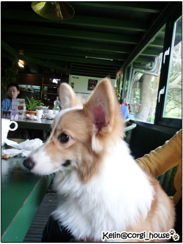
雖然是小小聚會~不過在號招之下! 狗子也來了10多隻吧!呵 
上面這個小可愛叫 ㄇㄧ ㄇㄧ 才7個月大~很害羞的小妞!!
一直躲在麻麻的腳上撒嬌!!
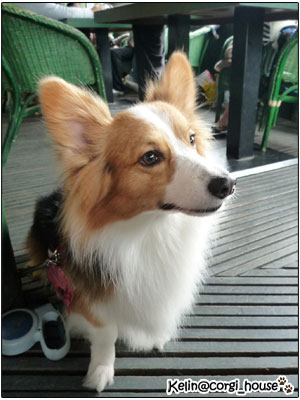
這位不用我多說~哈..他是大名鼎鼎的堂主Rocky
不過因為他娘親跑去拍摩卡卡了..他一直在搜索麻麻在那?
所以我始終拍不到他正面~ (沒認真拍還找藉口...==)
(沒認真拍還找藉口...==)
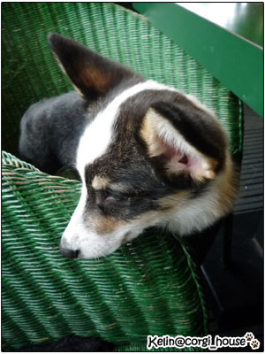
這個小幼幼叫Hammer,也才5個月大~
是黑白色的柯基耶~好特別!
他叫聲就更可愛了~是凹嗚..凹嗚..的 好好笑!!
至於我為什嘛又沒拍到他正面~
是因為我的餐點來了..阿嬤有說:呷笨皇帝大
先吃飯要緊啦! 雖然有很多隻狗子..但我沒有全部拍到
因為我很忙~忙著吃自己的東西~忙著吃拔拔的東西~忙著聊天~哈哈哈
所以沒有照片的小捧油們!!不要不開心歐~~
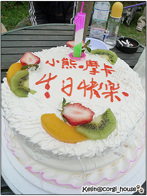
接著我們就到外頭的小草皮準備慶生切蛋糕嘍!!
在這先謝謝小熊家準備的生日蛋糕~還寫上了摩卡卡的大名!!
thank u ^^
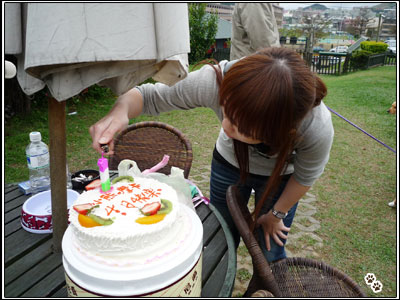
不過小熊麻為了點蠟燭可是猛足了勁~哈 風太大了!!
趁小熊麻在忙~我們抓了兩位小壽星上台拍照
結果出乎意料....
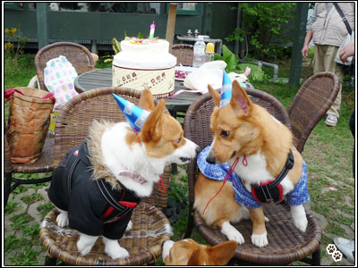
我家摩卡卡跟小熊不合啦! 摩卡卡居然先兇了小熊
泥看他那兇兇臉先跑出來了!!死小孩...
(話說下面那位看熱鬧不勸架的小孩是誰? 快出來自首! 哈哈)
被我們制止後~兩個人居然就一直背對背,互不相看了!
大家都大呼:摩卡好man歐!!變man了!!哈
摩卡卡~麻麻還是喜歡你娘一點吶~快給我變回來!
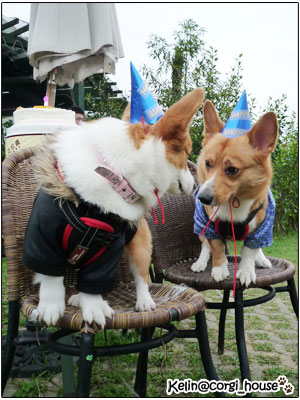
又不小心對上眼~摩卡卡又先兇了起來!!
這沒禮貌的小孩~他是熊哥耶~
還好熊哥今天肚量大不跟你計較..
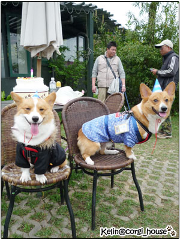
最後~我也只拍到一張他們兩位壽星唯一的合照!!
摩卡卡居然還瞇瞇眼~
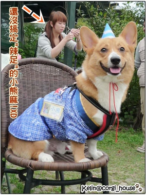
為了表示歉意~我幫熊哥拍了很英挺的獨照!!哈
不過也意外的發現身後~依然跟"辣足"在奮戰的小熊麻
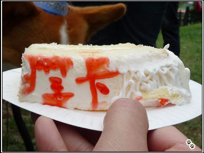
在我跟小熊麻一人一句快速的把生日快樂歌唱完後~XD
就立刻把蛋糕切了~分給大家嗑起來
大合照01 (呃..忘了抱卡卡)
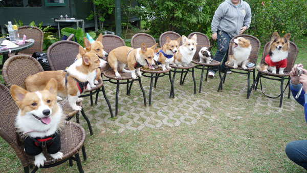
大合照02 (卡卡出現了!哈)
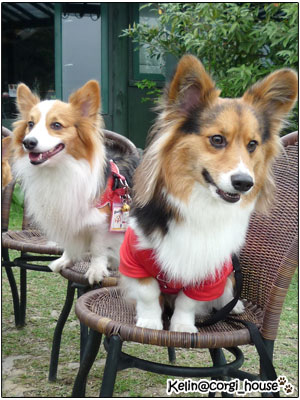
堂主跟副堂主也來補一張!! KUMA隨時看都感覺很有精神吶!
這就是大眼睛的世界嗎!? 
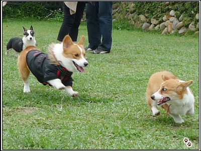
自由撒野時間~摩卡卡跟一隻叫ㄟ拉的小幼幼玩超high的
一直追著她飛來飛去~後面的小Hammer也是一直跟著
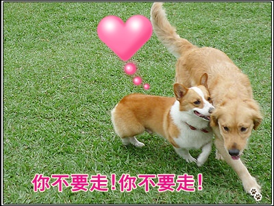 草皮上最受注目的是叫阿吉的孩子苦追小黃金的故事
草皮上最受注目的是叫阿吉的孩子苦追小黃金的故事
從頭跟到尾,沒離開過半步!誰靠近小黃金阿吉就抓狂 
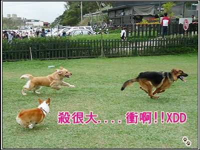
這是三角戀嗎!? 
恭禧阿吉!!!他終於爬上去了....哈哈哈!!
果然身高不是距離...人狗都一樣啦!!
後來kuma麻跟我說摩卡卡給我衝過去找德國狼犬~
在遠方的老木挫到飛了過去!! 還好人家也是外剛內柔的孩子
我只能說柯基真的是很不怕死的犬種....

最後我們帶著狗子去遊園~春天農場真的很不錯!!
後面還有一大片可以散散步的地方!! 想去戶外的這裡也很推歐!
by the way 嘟嘟麻 3/21在老爸後花園要幫嘟嘟辦生日趴~想參加的捧油!
請點--->嘟嘟家